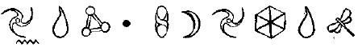

Cüce, Dwarf:
İskandinavya’da dağlarda, İrlanda ve Almanya’da yaşayan, çoğunlukla deforme olmuş ya da çirkin olarak betimlenen, kısa boylu, güçlü yaratıklar. Cücelerin hayatı genelde maden çıkararak geçer. Güneş ışığında taşa dönüşecekleri için yeryüzüne çıkmazlar.
Elf:
Büyülü güçleri olan, küçük, çoğunlukla da muzip perimsi yaratık. Başlangıçta insanlara can acıtmayan ama oldukça rahatsızlık veren minik oklar atan küçük, muzip varlıklardı. Ama Tolkien’in Yüzüklerin Efendisi’nden dolayı elfler ince, uzun, fidan gibi çok eski bir soy ve görkemli bir saygınlığa sahip varlıklar olarak da tanımlanırlar. İskandinavya’da elfler Alfar olarak bilinir.
Elfler yeraltında koloniler halinde yaşayan neşeli yaratıklardır. Partiler vermeyi, müziği ve dans etmeyi severler ama müziklerini dinlerken yakalanan insanları kaçırırlar.
Gargoyle:
Gotik yapıtları süsleyen, kanatlı, çirkin canavar heykellerine verilen ad. Büyücüler onları canlandırıp kendi emelleri için kullanabilirler.
Gnome:
Yeraltında yaşayan, hâzinelere bekçilik eden cücelere benzer peri sınıfına da giren varlıklardır. Genelde vejetaryendirler ve asla kaygılanmazlar. Bazıları muziptir ve insanlara zarar verirler. Gnomelar sert hatlı, asla yaşlanmayan ve her zaman kukuleta takan, sakallı adamlar olarak tanımlanırlar.
Goblin:
Perilerin karşıtı olduğu düşünülen genelde kötü yaratıklardır. .Goblinler genelde muziptir, şans bozarlar, kabuslara neden olurlar ve buna benzer küçük sıkıntılar yaratırlar ama bazıları tehlikeli hatta zaman zaman ölümcül olabilirler. Gülümsemelerinin insanın kanını dondurduğu, kahkahalarının sütü ekşitip, ağaçlardaki bütün meyvelerin dökülmesine neden oldukları söylenir. Goblinler peri dünyasının kötü şöhretli hırsızlarıdır. Deforme olmuş vücutları ve kocaman gözleri vardır. Yeraltı mağaralarında yaşarlar.
İmp:
Aslında Şeytan’ın bütün çocuklarına "verilen isimdi ama 18. yy da diğer bütün kötü yaratıklar için de kullanıldı. Günümüzde, cehennemde yanan insanları küçük çatallarıyla dürten minik şeytanlar olarak bilinirler.
Başka kaynaklarda volkanik tepelerde gözüken Gremlinlerin akrabalarıdır. Sivri pençeleri ve iğneli kuyruklarıyla saldırırlar. Kötülük dolu küçük siyah yaratıklardır.